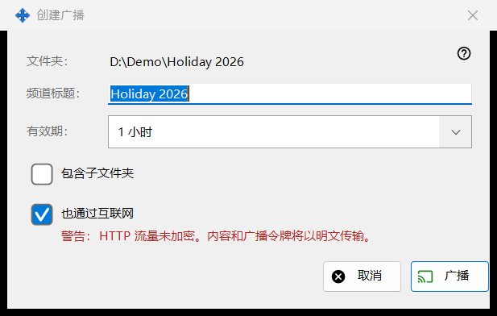
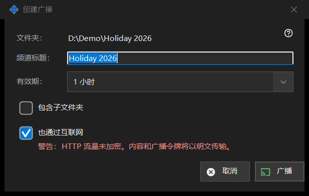

创建广播
用途说明
在创建广播之前设置它：标题、存续时间，以及是否到达本地网络之外。它从广播窗口中针对所选文件或文件夹的「创建广播..」打开。在你点击「广播」之前不会创建或发送任何内容。


操作顺序
- 检查第一行中的路径（「文件夹：」或「文件：」）。
- 编辑「频道标题：」；它初始为文件夹或文件的名称。
- 选择「有效期：」。
- 对于文件夹，如需子文件夹，请勾选「包含子文件夹」。
- 保留或取消「也通过互联网」。
- 点击「广播」（Enter）或「取消」（Escape）。
界面元素
标题和有效期
频道标题是广播列表中显示的名称。有效期提供 24 小时（默认）、1 小时、7 天和「直至撤销」；后者没有结束日期，会一直保留，直到你在广播窗口中将其撤销。
包含子文件夹
仅当目标是文件夹时显示，默认关闭。它决定广播文件夹的子文件夹中的文件是否包含在内。
也通过互联网
默认勾选，除非共享设置将导出限制在本地网络内。勾选时，链接除本地地址外，还包含此电脑的 IPv6 地址和端口转发的互联网地址（如果已知）。勾选会把有效期从 24 小时改为 1 小时（可以改回去），并显示红色警告：HTTP 流量未加密，因此内容和广播令牌以未加密方式传输。任何拿到链接的人都可以在其过期或被撤销之前读取广播文件。取消勾选可让广播保持在本地网络内。
广播和取消
「广播」只是把你的选择交还给广播窗口，由它创建广播并复制其链接。「取消」关闭对话框，不创建任何内容。